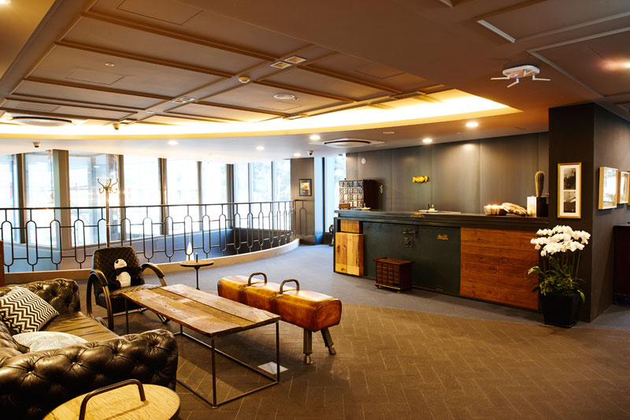

Stay
NOT on the 1F, 로비 높은 국내 호텔
꼭 1층이어야 한다는 편견을 버릴 때, 체크인 이상의 경험을 하게 될 것이다. 로비가 높은 층에 자리한 국내 호텔들을 모았다.Expert’s Thumbs UP, 리조트가 다하는 여행
리조트 골라 주는 게 일인 그가 출장으로, 가족여행으로 다녀와 보니 정말로 추천하고 싶어졌다는 가성비 좋은 동남아 리조트들.2020, 꼭 ‘체크인’ 해야 할 신상 호텔
2020년 이 호텔들을 주목해보자!
Stay
×
● 한 편의 영화를 보듯
호텔28 명동
명동 예술 극장 옆, 호텔 입구로 들어서자마자 가장 먼저 보이는 건 카메라와 영사기 등 레트로풍 영화 소품들이다. 프론트는? 6층에 따로 있다. 유동 인구가 많은 명동의 특성상
1층은 혼잡할 수 있고, 따라서 투숙객의 안락한 기분을 방해할 수 있다는 판단에서 나온 선택인 것. 1층에 있는 컨시어지 담당자가 직접 투숙객을 맞아 체크인까지 안내한다. 과거
문화예술의 중심지였던 명동을 부흥시킨다는 취지로 설립된 호텔28 명동은 모든 공간이 영화 같다. 체크인할 때 웰컴 기프트로 팝콘을 주고, 키 카드는 영화 티켓 모양이다.
● 서울이 발밑에 깔린다
쉐라톤 서울 디큐브시티 호텔
호텔에 묵는 사람이라면 모두 다 같은 특권을 누려야 한다. 호텔의 가장 꼭대기 층, 무려 41층에 로비를 만든 이유다. 쉐라톤 서울 디큐브시티 호텔은 고층에 위치한 스위트룸의
투숙객만이 조망권을 가진다는 고정관념을 과감하게 깼다. 전 객실에 바닥에서부터 천장까지 이르는 유리창을 내는 등 투숙객 모두가 전망을 즐길 수 있도록 하는 데 특히나 심혈을
기울였다. 41층 로비에서 바라보는, 그야말로 시원하게 깔린 서울의 전경은 체크인 용도로만 두기엔 아까우니까. 시그니처 레스토랑 ‘피스트(feast)’와 와인과 칵테일을 마시며
야경을 볼 수 있는 ‘로비 라운지 바’를 운영한다.

● 한 잔 하고 시작하시죠
목시 서울 인사동
목시의 경험은 루프톱에서부터 시작된다. 그래피티가 한쪽 벽면을 가득 채운 16층 바(bar)가 다름 아닌 로비다. 웰컴 드링크를 마시며 체크인을 하는 동안 서울의 스카이라인이
펼쳐진 창밖 풍경은 덤. 호텔 로비는 단순히 안내하는 공간을 넘어 호텔과 투숙객의 첫 만남이자 네트워킹 공간이라는 생각에서다. 목시 서울 인사동은 메리어트가 밀레니얼 세대를 겨냥해
만든 호텔로, 시설과 서비스 역시 젊은 세대에 맞춰져 있다. 1~2층에 누구나 보드게임을 하거나 책을 읽을 수 있는 ‘플레이 라운지(PLAY Lounge)’를 24시간 운영한다.
● 뉴요커 걸음처럼 산뜻하게
호텔 더블에이
호텔 더블에이의 방향성은 ‘히스토리컬 부티크(Historical Boutique)’다. 1959년부터 운영해 온 옛 아스토리아 호텔을 개조해 지난 2018년 새로운 이름으로
오픈했다. 아스토리아 호텔에서 쓰던 자개 문까지 인테리어로 활용할 정도로 옛것을 간직한 반면 파격적으로 바꾼 요소가 하나 있으니 로비를 2층에 둔 것이다. 뉴욕의 거리를 걷는
것처럼 캐주얼한 분위기를 내고 싶어 1층에 전형적인 로비 대신 이탈리아 사람이 운영하는 정통 이탈리안 레스토랑 ‘Calice’를 입점시켰다는 게 호텔 측의 설명이다. 2층 로비가
못 다한 ‘뷰’는 14층 레스토랑 ‘에이뷰앤테라스’에서 책임진다. 서울N타워를 정면으로 바라보며 조식을 즐길 수 있다.
● 당신의 뷰에 따라
파크 하얏트 서울&부산
로비, 라운지, 피트니스 클럽. 파크 하얏트 서울의 가장 고층인 24층에 있는 시설들의 공통점 역시 ‘뷰’를 포기할 수 없다는 것이다. 체크인할 때, 러닝머신을 탈 때, 칵테일을
마시는 동안에도 서울의 전경은 다른 각도로 다가온다. 23~24층에 위치한 피트니스 스튜디오 ‘파크 클럽(Park Club)’은 헬스클럽과 실내 수영장, 스파 시설을 갖추고 있고
24층 ‘더 라운지(The Lounge)’에서는 전통차와 전통주 칵테일 등 모던 한식을 선보인다.
부산 해운대에 위치한 파크 하얏트 부산의 로비는 30층에 있다. 도심엔 없는 ‘바다’를 끼고 있다는 것이 무엇보다 가장 큰 강점이다. 마린시티와 해운대 바다를 바로 곁에 두고
있으니 늘 하던 체크인마저 설렐 밖에. 애프터눈 티 세트로 인기인 로비 라운지에서도 창가 자리가 가장 먼저 선점되곤 한다. 객실에서의 하이라이트는 밤에 보는 광안대교다.
Feature
×
● 힐튼 브랜드의 최상위급
월도프 아스토리아 방콕
Waldorf Astoria Bangkok
무슨 설명이 더 필요하랴. 월도프는 힐튼의 브랜드 중에서도 최상위급에 속한다. 방콕 도심에 위치한 에라완 사원 근처에 자리 잡은 호텔은 태국 전통 요소에 영감을 받은 건축가 안드레
푸가 디자인을 맡아서 세련됨을 더했다. 딜럭스(시티뷰, 파크뷰)와 스위트룸으로 이뤄진 171개의 객실은 46m2라서, 동남아의 일반적인 ‘럭셔리’에 대한 기대를 위배하는 다소 작은
객실이지만, 중요한 것은 퀄리티! 누워 보면 알 수 있는 편안한 침대와 마음을 차분하게 하는 세련된 디자인은 모든 아쉬움을 날려 버린다.
이 호텔 조식의 시그니처 메뉴이자 개인적으로도 가장 인상 깊었던 것은 ‘에그 베네딕트’였다. 단단하면서도 촉촉한, 오감을 만족시키는 메뉴다. 추천을 하나 더하자면 한적한 인피니티
수영장이다. 역시 규모는 아담하지만, 호텔 앞의 골프장 뷰를 바라보며 나만의 시간을 보내긴 제격이다. 시암 파라곤까지 도보로 10분, BTS까지 한 정거장 거리인 것도 장점.
● 무조건 가야 할 호텔1위
더 플러톤 베이 호텔
The Fullerton Bay Hotel
‘완벽한 호텔’ 하나를 꼽아야 한다면 이곳을 꼽겠다. 2018년 처음 견학을 갔다가 아내와 함께 다시 방문한 곳. 호텔 위치와 전경, 2가지를 완벽하게 채운 곳이 바로 더 플러톤
베이 호텔이다.
객실은 100개에 불과하며 2010년에 오픈했다. 2개 타입의 객실을 이용했는데 프리미어룸은 머라이언상이 보이는 뷰를 가졌고, 베이뷰룸에서는 마리나베이 샌즈가 바라다보인다.
화려하게 빛나는 마리나베이 샌즈, 리츠칼튼이 야경의 일부고, 마리나베이 샌즈에서 야간에 진행하는 레이저쇼를 객실 발코니에서 볼 수 있다.
아내의 탄성이 터진 것은 객실이 아니라 로비에 들어서면서부터였다. 곳곳에 장식된 백합, 장미 등의 생화에서 퍼지는 향기는 진정 오감을 위한 배려다. 유명한 클리포드 피어 레스토랑은
19세기에 이민국으로 사용되었던 곳.
싱가포르의 전통술의 하나인 ‘슬링’을 맛볼 수 있는 바는 많지만, 더 플러톤 베이 호텔의 랜턴바는 마리나베이 샌즈의 풍경을 술잔에 담을 수 있다는 점에서 독보적이다. 좋은 자리는
1달 전에도 마감이 된다고. 랜턴바 옆, 투명 유리로 설치된 수영장에서는 마리나베이 샌즈를 내려다볼 수 있다. 물속에 설치한 선데크에 누워 물 위에 떠 있는 느낌도 만끽해 보자.
● 위대한 위치의 힘
리츠칼튼 밀레니아 싱가포르
The Ritz-Calton Millenia Singapore
마리나베이 중심부에서 싱가포르의 멋진 야경을 즐기기 제격인 곳이다. 왼쪽으로는 마리나베이 샌즈 호텔이, 오른쪽으로는 도심지구를 볼 수 있는데, 욕실의 육각 창문을 통해 전경을
내려다볼 수 있는 특권이 주어진다.
걸어서 주요 관광지를 갈 수 있다는 것도 중요한 장점이다. 마리나베이 샌즈까지 15분, 싱가포르 플라이어까지 7분, 머라이언상까지 15분, 에스플러네이드까지 10분, 가든스 바이
더 베이까지 17분, 모두 도보 기준이다. 클럽룸 혹은 그 이상의 객실에 머무는 게스트들은 클럽 라운지에서 해피아워 다과 및 24시간 커피 혹은 차를 즐길 수 있다.
● 독창적인 감각의 향연
W 싱가포르 센토사 코브
W Singapore Sentosa Cove
센토사섬에 위치한 또 하나의 럭셔리 브랜드는 메리어트 체인에 속하는 W 호텔이다. 가장 먼저 맞아 주는 곳은 풀 안에서 음악이 나오는 웨트 아웃도어 풀이다. 그 곁을 지나 계단을
오르면 웰컴 데스크의 직원들이 친근하게 체크인을 도와준다.
모든 객실이 감각적이고 특색 있지만, 특히 ‘판타스틱 스위트 킹 위드 플런지 풀(Fantastic Suite King With Plunge Pool)’ 객실은 확 트인 오션뷰와
함께 플런지풀에서 W만의 즐거움을 경험하기 충분하다. 총 240개 객실 중 단 2개뿐인 타입이니 예약을 서두르시길. W만의 자유로움과 감각적인 분위기에 흠뻑 젖을 수 있다는 점
외에도 센토사섬 밖의 주요 관광지까지 차로 20~30분밖에 걸리지 않는 것도 장점이다.
Feature
×
● 호캉스에 딱 맞는 뷰
포시즌스 방콕 차오프라야강
Four Seasons Hotel Bangkok at Chao Phraya River
‘호캉스’라는 것은 조망이 절반이다. 태국 차오프라야강을 가득 품은 ‘포시즌스 호텔’이 방콕에 오픈한다. 디자인은 태국 전통 양식에 기반했으며 남미 소셜 클럽에서 영감을 받았다고
한다. 덕분에 이국적인 색채가 매력적이다. 럭셔리 호텔 건축가로 잘 알려진 장 미셸 게티(Jean Michel Gathy)가 전체적인 설계를 맡았다. 스위트룸을 포함해 총
299개의 객실을 보유하고 있다.
또한 미쉐린 스타 셰프가 이끄는 광둥식 레스토랑 ‘유 팅 웬’과 세계적인 믹솔로지스트(Mixologist)*인 필립 비숍 팀이 이끄는 ‘BBK 소셜 클럽’ 등 7개의 식당 및 바가
들어설 예정이다. 이외에도 현지식 아로마 테라피를 접목한 이색 스파 프로그램과 명상, 요가 등의 즐길거리를 제공할 예정이다. 오픈 기념 특전으로 최소 2박 투숙시 식사와 스파에
사용할 수 있는 100달러 크레딧을 제공하는 프로모션을 6월30일까지 진행한다.

● 살고 싶은 곳
아바니 애들레이드 레지던스
Avani Adelaide Residences
애들레이드는 남호주의 주도다. 남호주는 호주의 다른 5개의 주와 모두 접하고 있는 유일한 주이기도 하다. 이곳에 ‘아바니 애들레이드 레지던스’가 새롭게 오픈한다. 쇼핑 및 카페
거리로 유명한 런들 몰과 애들레이드 센트럴 마켓, 사우스오스트레일리아 아트 갤러리와 박물관이 근접한 프랭클린 스트리트(St. Franklin) 중심에 위치한다.
모던한 디자인 인테리어를 갖춘 76개의 스튜디오 타입 객실과 1 베드룸부터 3 베드룸, 스위트 객실은 모두 주방 및 세탁 시설을 갖췄다. 또한 온수 수영장을 비롯해 영화관,
도서관, 스팀 룸과 사우나를 갖춘 아바니핏(Avanifit)을 이용할 수 있으며 최첨단 골프 시뮬레이터를 사용해 볼 수도 있다.
옥상 테라스와 야외 바비큐 공간은 투숙객이라면 누구나 이용이 가능하다. 마치 집처럼 편안하게 머물 수 있도록 요가 매트, 헤어 스타일러 등 편의도구를 세심히 갖췄으며 어린이 고객을
위한 무료 색칠 도구, 어린이용 의자 등도 준비되어 있다.
● 신라의 기운
신라 모노그램 다낭
Shilla Monogram Danang
‘국내 고급 호텔’ 하면 가장 먼저 떠오르는 신라호텔을 다낭에서 만나 볼 수 있다. ‘신라 모노그램 다낭’은 ‘신라’라는 브랜드로 해외에 처음 진출한 호텔이다. 다낭 농눅비치에
위치하고 있으며, 유네스코 세계문화유산으로 지정된 호이안으로 이동이 편리하다.
신라호텔은 그동안 이어온 절제된 세련미를 바탕으로 ‘어퍼 업스케일’급 호텔 브랜드를 지향하겠다는 의지를 밝혔다. ‘어퍼 업스케일’급 호텔은 객실 평균 가격을 기준으로 상위 15%의
호텔 가운데 최상위인 럭셔리 호텔 바로 아래 등급을 뜻한다.
호텔 로고는 알파벳 ‘M’이 물에 비쳐 대칭을 이룬 모습을 하고 있다. 모노그램의 스펠링에서 아이디어를 착안했으며 조화와 대칭을 나타낸다고 한다. 지상 9층 높이의 건물에 총
300여 개의 객실을 갖췄으며 최근 CNN에서 선정한 2020년 신상 아시아 호텔 BEST 15에 선정되기도 했다. 호텔 내 4개의 야외 수영장이 구비되어 있으며 라운지 등을 모두
갖춘 라이프스타일 콘셉트의 리조트다. 현재 1박당 책정 요금은 약 23만원 정도라고.
● 싱가포르 골프 성지
두짓타니 라구나 싱가포르
Dusit Thani Laguna Singapore
골프 여행객들에게 희소식 한 가지. 싱가포르 최상의 골프 코스로 손꼽히는 ‘라구나 내셔널 골프 & 컨트리클럽’ 안에 ‘두짓타니 라구나 싱가포르’가 오픈한다. ‘라구나 내셔널 골프
& 컨트리클럽’의 13번 홀은 세계 최고 500대 홀에 들어갈 정도로 훌륭하다고 평가받고 있다. 호텔은 창이 공항으로부터 약 10분 거리에 위치한다.
두짓타니는 태국의 럭셔리 리조트 브랜드로 198개의 방과 스위트룸, 3개의 수영장을 갖추고 있다. 또한 다양한 전통 요리를 선보이는 레스토랑과 더 네스트 골프 클럽 레스토랑, 더
레전드 바 등 다양한 먹거리를 선보이며 3개의 테니스 코트, 골프 연습장과 두짓 시그니처인 데베라나 스파 등 부대시설도 알차다. 비즈니스 여행객이 많이 찾는 싱가포르인 만큼 2개의
미팅룸과 넓은 회의실, 최대 520명이 착석 가능한 연회장도 갖추고 있다.